网络空间测绘（Cyber Spatial Mapping）这两年越听越多了——它干的事很像"给全互联网做一次人口普查"：自动扫描 IPv4 全量的端口和服务，把每个 IP 开放了什么、跑的是什么版本、Banner 写了什么，全部存进数据库，再给你一个搜索引擎式的界面去查。这篇记录我自己动手用 ZoomEye 跑通检索、并把子域名收集实践了一遍的完整过程，顺便把市面上同类引擎梳理清楚。
声明：本文全部查询均为被动查看公开索引，未向任何第三方目标发送探测流量。网络空间测绘的公开数据是安全研究的利器，但请只在授权范围内使用，对未授权目标发起主动扫描属于违规行为。
一、类 ZoomEye 引擎盘点
先横向看一眼这个赛道。下面几个产品思路一致——扫全网、建指纹库、提供检索——但数据来源、覆盖重心、开放程度各有侧重：
| 引擎 | 背景 | 检索语法特点 | 免费额度 |
|---|---|---|---|
| ZoomEye | 国内知道创宇 | app: / service: / port: / country: / banner: / site:，支持 Web 与主机两种视图 | 有限次/天 |
| Shodan | 美国，最早成名 | port: / country: / product: / os:，物联网设备指纹极强 | 有限条/月 |
| FOFA | 国内华顺信安 | app="X" / host="X" / title="X"，国内资产覆盖最全 | 有限条/月 |
| Censys | 美国，学术出身 | 基于证书和协议层扫描，services.service_name= 等结构化语法 | 有限次/月 |
| 奇安信 Hunter | 国内奇安信 | domain= / ip= / service=，偏威胁情报视角 | 有限积分 |
| 360 Quake | 国内 360 | app:"X" / port:，国内节点扫描密度高 | 有限次/月 |
| Netlas | 海外开源向 | service.name= / response.banner=，免费档较友好 | 较宽松 |
它们的价值不在于"扫"，而在于把别人扫好的结果存成了可检索的库。安全研究员做资产梳理、暴露面盘点、漏洞影响面评估时，第一反应往往是先去这些库里查一查，而不是自己去扫。
二、ZoomEye 实操
ZoomEye 有两种搜索视图：Web 资产（网站/域名）和主机资产（IP/端口/服务）。下面都是我在主机视图里做的。
1. 登录首页
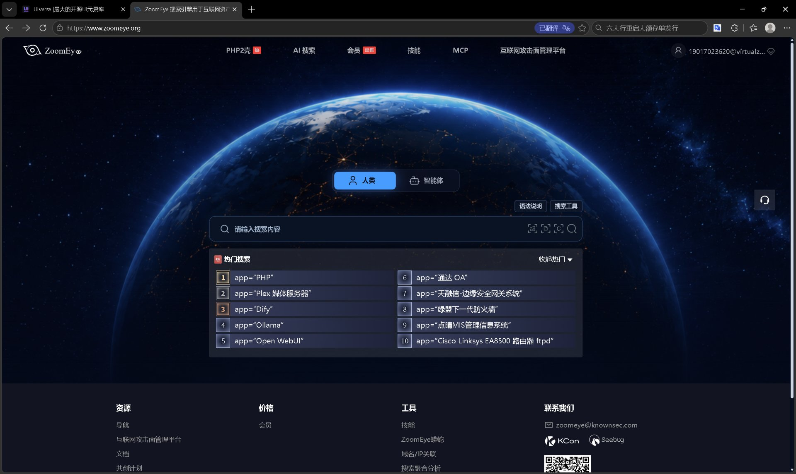
2. 第一次查询：一个"空结果"的反面教材
我最初想用一个教学站点 testfire.net 做演示，输入：
site:testfire.net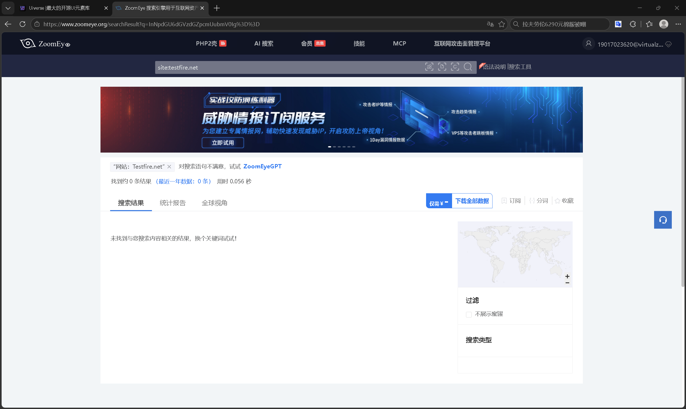
空结果其实是个好教材：它说明测绘引擎的覆盖是按"近期是否被扫到"决定的，并不是全网每个角落都实时可见。后来我换用大型站点，就能看到典型资产分布了。
3. 第二个坑：查询整体被引号包裹
中间我还犯过一个典型错误——把整条查询套进英文双引号：
"service:ftp port:21"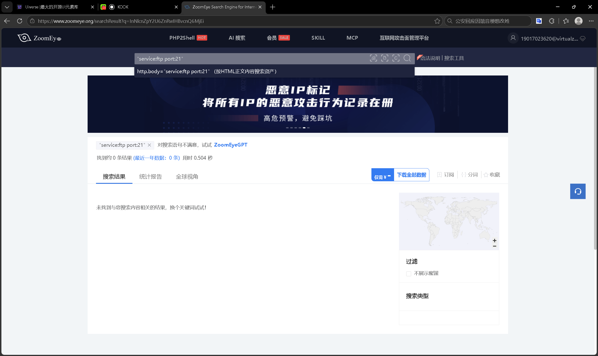
http.body="service:ftp port:21" 即证据），引擎在"网页正文里原样找这串文字"，自然什么都搜不到。规则记牢：引号只在包"带空格的词组"时用（例如 app:"Apache httpd"，应用名里有空格）；像 service: / port: / site: 这类语法前缀永远不包引号，否则整句会被当成字面量。
4. 正确示范：按服务 + 端口检索
去掉引号，直接输入：
service:ftp port:21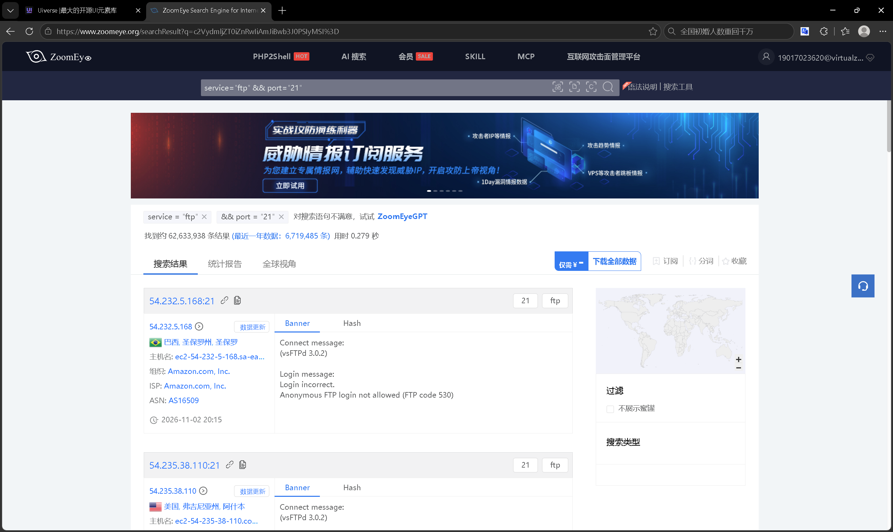
5. 多条件组合：指纹 + 国家
app:"Apache httpd" country:"China"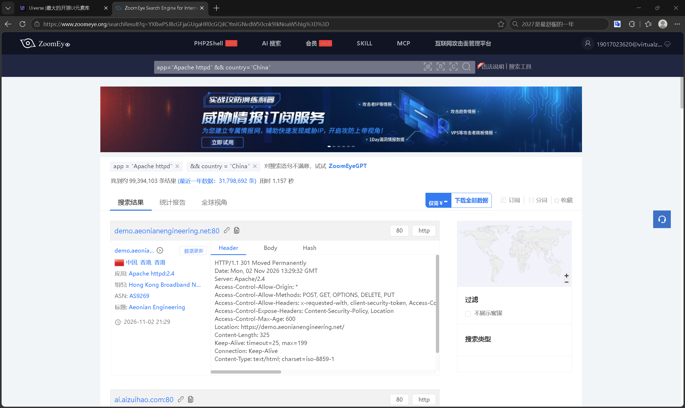
Server: Apache/2.4 清晰可见，证明多条件组合检索可用。6. 按 Banner 搜服务
banner:vsftpd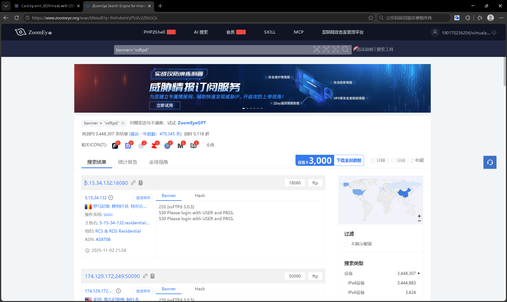
插曲：图6 之前我误把 "banner:vsftpd" 整体加引号，只歪打正着命中成都一台 vsFTPd 3.3.3（见下一张）。这反而印证了引擎对"查询语义"的严格区分——引号一加，就从"语法检索"退化成"正文字面匹配"。
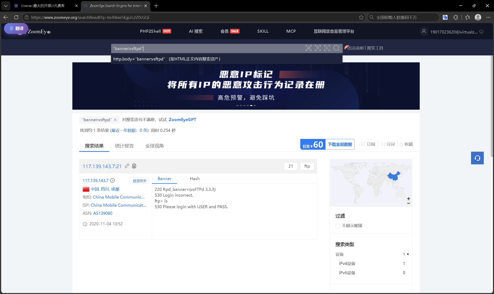
7. 资产详情页：一台机器的完整画像
点结果卡片里蓝色的 IP 文字（而不是标题链接），进入 ZoomEye 站内资产详情页：
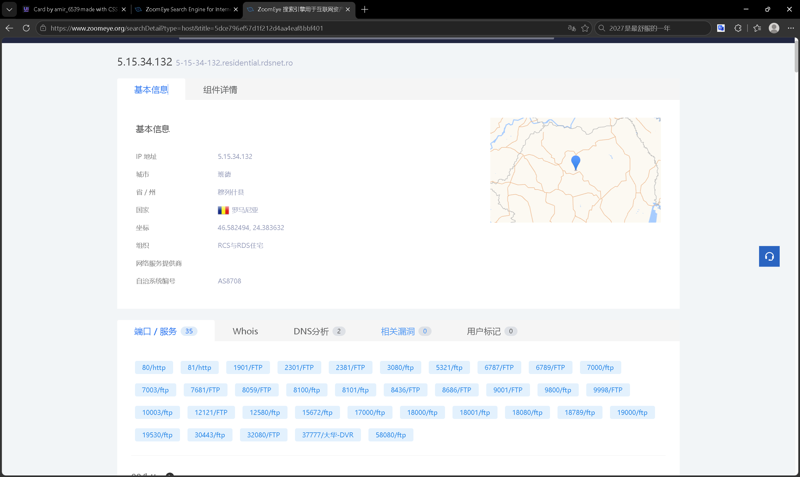
一个安全提醒：结果列表里另有一类"直连目标 IP"的外部链接。有一次我不小心点了它，浏览器直接去访问那台第三方服务器（FTP 服务当然不会渲染网页，所以是空白页）。这种"点出去"的动作，性质已经和"在引擎里被动查索引"完全不同了——前者是直接接触第三方资产。截图留念后立刻关掉了标签页，绝不输入任何东西。这提醒我们：测绘查询 = 看公开档案；主动直连 = 另一种行为边界。
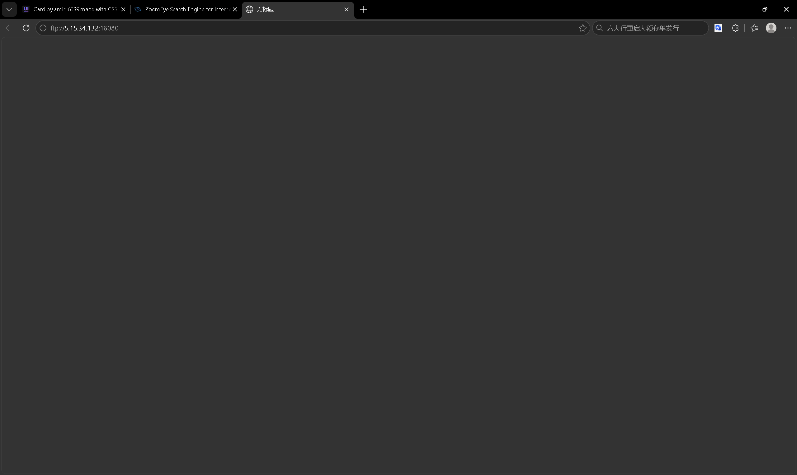
三、子域名收集（被动手法）
子域名收集常是资产梳理的第一步：一个主域名下藏着的 demo.、api.、test. 往往是防护最薄弱的入口。我用两种被动数据源来做，它们不向目标发任何包。
方法一：证书透明度（crt.sh）
HTTPS 证书签发会进入公开的 CT（Certificate Transparency）日志。只要一个站点申请过 *.testfire.net 的证书，就会被记下来：
https://crt.sh/?q=%25.testfire.net%25 是通配符 % 的 URL 转义，意思是"匹配该域名下所有子域"。
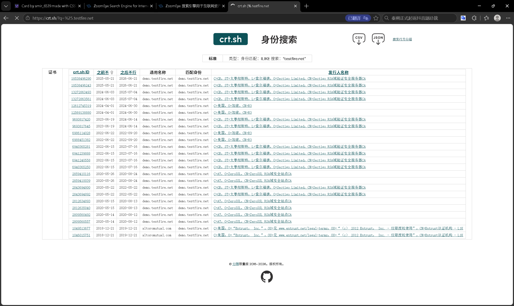
demo.testfire.net 从 2019 到 2026 年反复签发。签发即公开——一次查询就能拉出多年的资产历史，这就是证书透明度的威力。方法二：搜索引擎语法（Bing）
另一条路是从搜索引擎的已索引页面里找子域。百度对 * 通配支持差、谷歌国内访问不稳，Bing 对 site: 子域查询支持最顺手：
site:*.testfire.net -site:www.testfire.net减号 = 排除 www 这个最常见子域，避免结果被刷屏。
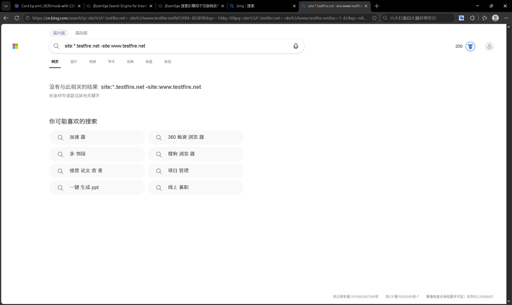
两种被动源互为补充：证书库能看到历史、全量，但只对 HTTPS 资产有效；搜索引擎能看到当前可被访问的页面，却依赖爬虫覆盖。把两者放一起看，才能更接近一个域名的真实子域版图。
四、被动收集 vs 主动探测
这次实操刻意只用了被动手法，理由不止"省事"，更是合规边界：
- 被动收集：查公开索引（测绘库）、查公开证书（crt.sh）、查公开页面（搜索引擎）——本质是"看别人已经公开的数据"，风险低，是资产自查、暴露面评估的常规动作；
- 主动探测：子域名爆破（如
gobuster/subfinder字典枚举）、端口扫描、漏洞扫描——这些会向目标发送流量，只能在明确授权的资产上做； - 直连第三方：比主动探测更接近"接触"，即便只是打开一个 IP 链接，也应避免——图9 就是一次值得记住的教训。
对初学者来说，先把"被动收集"这一套摸熟，既能完成大部分资产梳理需求，又始终把行为停在安全区。
五、小结
这次从"盘点引擎"到"跑通 ZoomEye 检索"再到"用两种被动手法收子域"，把网络空间测绘这条线走了一遍：
- 引擎：ZoomEye / Shodan / FOFA / Censys / Hunter / Quake / Netlas 思路同源，差异在数据与开放度；
- 语法：前缀不包引号，词组才加引号——一个引号之差，检索语义天壤之别；
- 子域：证书透明度 + 搜索引擎索引，两种被动源互补，看清一个域名的暴露面；
- 边界：被动看公开数据，主动探测须授权，直连第三方要避开。
把公开数据用好，已经能回答很多安全问题——前提是，清楚地知道自己在"看"，而不是"碰"。
← 返回首页